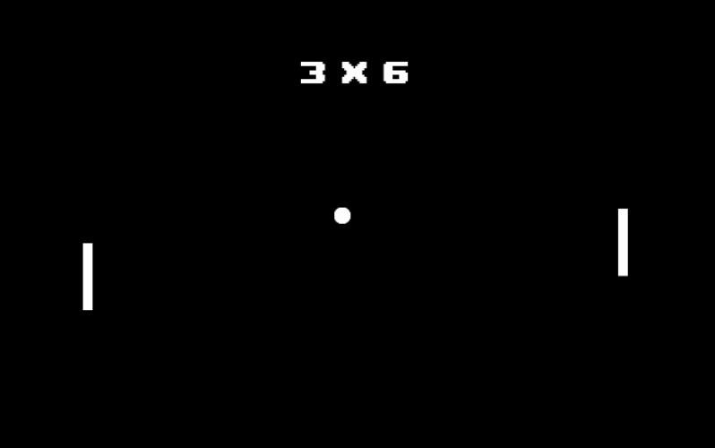
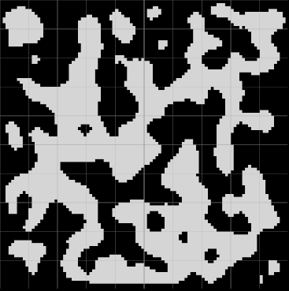
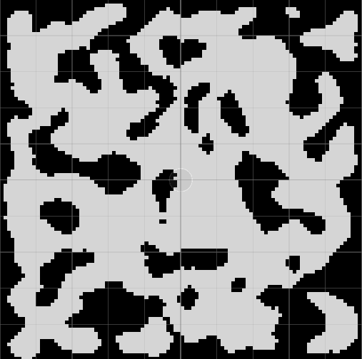
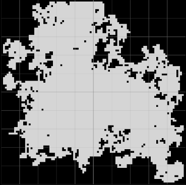
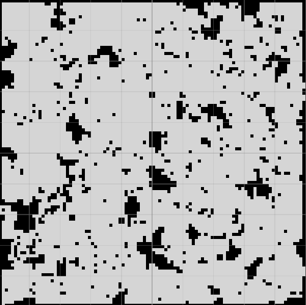
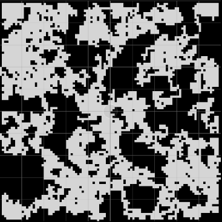
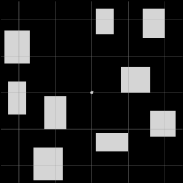
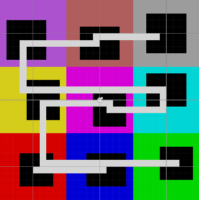

Jogo de labirinto 2D.

Jogo 2D Sokoban com elementos educacionais.

Chatbot para agendamento de consultas médicas no Telegram.

Compilador da linguagem C para a Máquina Virtual SaM.

API de cadastro de usuários.

App mobile com IA que cria cronogramas diários personalizados a partir das tarefas do usuário.

Jogo 2D Pong.

Rule: Caves; N: 13; r: 2; Steps: 3; Grid: 100 x 100
É possível desenvolver mapas para jogos 2D utilizando autômatos celulares. Um autômato celular possui uma grade, um conjunto de estados e um conjunto de regras de transição. Para cada célula da grade, um estado é definido. A partir disso, a cada passo, o sistema evolui de acordo com as regras estabelecidas, e cada célula determina seu novo estado com base em seu próprio estado e nos estados das células vizinhas no passo anterior.
Existem diferentes regras de transição que podem ser utilizadas de acordo com o objetivo da geração. No contexto de mapas 2D, regras como Caves e Majority podem gerar mapas com características semelhantes a cavernas. Portanto, quando o objetivo é desenvolver um jogo que possua esse tipo de ambiente, essas regras podem ser uma boa escolha.
A regra Caves é definida da seguinte forma: as células sobrevivem quando n ≥ N - 1 e nascem quando n ≥ N. A regra Majority, por sua vez, é definida da seguinte forma: as células sobrevivem quando n ≥ N e nascem quando n ≥ N.

Rule: Majority; N: 13; r: 2; Steps: 3; Grid: 100 x 100

Rule: Majority; N: 13; r: 2; Steps: 5; Grid: 100 x 100
Nesse contexto, n corresponde ao valor da vizinhança e N corresponde ao limiar. Foi utilizada a vizinhança de Moore, que considera também as células diagonais em relação à célula central. Considerando r como o raio da vizinhança, ele define o alcance das células vizinhas que serão consideradas na contagem. Os mapas foram inicializados com sementes aleatórias, com 50% do mapa preenchido por células pretas.

Drunks: 400; Steps: 100; Grid: 100 x 100; RandomPositionDiscovery;
Drunkard's Walk é um algoritmo de caminhada aleatória, no qual um agente, denominado bêbado (drunk), realiza movimentos aleatórios. No contexto de mapas 2D, inicialmente são definidas as dimensões da área do mapa. Essa área é preenchida com blocos (paredes). Em seguida, um drunk é posicionado no mapa, e as células pelas quais ele se desloca são convertidas em células caminháveis, removendo os blocos que as ocupavam.
O drunk pode se mover aleatoriamente pelo mapa em quatro direções cardeais até atingir um limite máximo de passos. Após gerar um caminho, é possível gerar outro adicionando um novo drunk ao mapa. Um único caminho traçado é contínuo, já que o drunk não realiza saltos entre as células.

Drunks: 400; Steps: 100; Grid: 100 x 100; RandomPosition;

Drunks: 200; Steps: 100; Grid: 100 x 100; RandomPosition;
Para possibilitar a formação de regiões separadas no mapa, cada agente pode ser adicionado em uma posição aleatória. Outra abordagem consiste em adicionar cada agente em uma posição aleatória dentro de áreas que já foram percorridas, resultando em uma única região maior e conexa.

Rooms: 9; Margin: 5; Size: 5-10; Attempts: 100;
No posicionamento simples de cômodos, salas aleatórias são posicionadas dentro de uma grade 2D. Inicialmente, definem-se os limites da área do mapa, que é preenchida com blocos representando as paredes. Em seguida, uma sala retangular de tamanho aleatório é adicionada em uma posição aleatória do mapa. Caso essa sala sobreponha alguma sala existente, ela é descartada e uma nova é gerada. Dessa forma, uma sala só é adicionada ao mapa quando não há sobreposição com outra.
O processo de alocação das salas continua até que algum critério de parada seja atingido, como, por exemplo, a quantidade máxima de salas.
Considere Rooms como a quantidade máxima de salas, Margin como a região livre ao redor de cada sala, Size: 5-10 como o intervalo de tamanho aleatório das salas e Attempts como a quantidade de tentativas de alocação das salas.

Region Size: 10; Regions: 3 x 3; Room Size: 4-6;
Para controlar melhor a disposição das salas, é possível organizá-las em uma grade de células. Em vez de posicioná-las aleatoriamente por todo o mapa, elas são posicionadas aleatoriamente dentro de uma célula maior da grade. O mapa é dividido em regiões de tamanho definido por Region Size, e a quantidade de regiões é definida por Regions. Já Room Size representa o intervalo de tamanho aleatório das salas.
Por exemplo, considerando Region Size: 10 e Regions: 3 x 3, o mapa será dividido em 3 regiões na horizontal e 3 na vertical, totalizando 9 regiões. Como cada região possui 10 x 10 células, a grade resultante terá 30 x 30 células.
Atualmente estou desenvolvendo o meu Trabalho de Conclusão de Curso (TCC), no qual explorei algumas técnicas clássicas de geração procedural. A partir desse estudo, o tema do meu TCC é a geração procedural em um jogo 2D utilizando autômatos celulares para a geração dos mapas.

Sou estudante de Ciência da Computação no IFB, atualmente estou no oitavo semestre. Durante a graduação, desenvolvi conhecimentos em lógica de programação e em linguagens como C, C#, Java, JavaScript e Python. Também tive meu primeiro contato com desenvolvimento de jogos na disciplina de Computação Gráfica, onde utilizei a Unity para criar um jogo 2D. Atualmente, estou explorando diferentes áreas da computação e buscando aprender novas tecnologias, com interesse especial em me aprofundar no desenvolvimento de jogos.